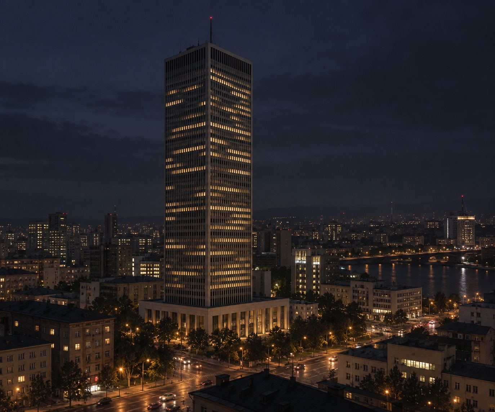

Great Friendship Skyscraper
The Great Friendship Skyscraper is a landmark super-tall mixed-use complex in central Kora (Kivish), opened in 1958 as a symbol of international technological cooperation.
Concept and purpose
The project was conceived as a “vertical campus” for international companies and science-and-technology centers. The complex combined office clusters, laboratory floors, media hubs, public spaces, conference centers, and a panoramic observation deck. The name emphasized the idea of open cooperation and knowledge exchange between countries.
Architecture
The skyscraper’s silhouette was defined by a three-wing layout with aerodynamic facets that reduce wind loads. The load-bearing frame is a combined tube-and-truss system with a stiff core and peripheral “belts” every 20 floors. The facades are glass-composite with energy-efficient louvers. The underground part included four levels: technical services, parking, logistics, and a communications hub.
Technical parameters
- Height with spire — about 468 m; roof height — ~443 m.
- Usable area — ~420,000 m².
- Elevator system — zoned, with two “sky lobbies” and express elevators.
- Seismic resistance — designed for rare events with a 1-in-2,500-year return period.
Safety systems
The complex was designed for enhanced survivability: triple-circuit fire protection (water mist, gas suppression in server rooms, fire compartments), duplicated stair/elevator cores, redundant power, and distributed data centers. A helipad for emergency services was located on the roof. After 2015, protocols were added for interaction with aviation alert systems (repeaters and light beacons).

Operations
Since 1958, the tower housed headquarters of technology companies, international accelerators, media-holding offices, and exhibition spaces. Average daily visitor and staff flow reached 30–35 thousand people.
In culture
The tower was often used as a visual symbol of modern Kora in films, series, and advertising clips.